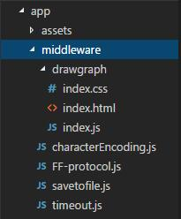
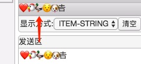

visual-serial功能介绍
visual-serial是一款开源的串口应用软件，其具有高度的可扩展性，旨在吸收广大电工们的思想精华与最佳实践，共同打造一款具有一套常用基本功能的便民利器。
visual-serial基于electron、 node-serialport等开源软件项目进行搭建。 electron是一个使用HTML、CSS和JavaScript/Node.js开发跨平台应用的框架，因此，visual-serial理论上会支持windows（>=window7版本）、macOS以及部分Linux系统，重要的事需要强调一遍： 不支持windows XP系统，因为electron已经放弃了对这款古老系统的支持。
为什么选择HTML、CSS和JavaScript开发
- HTML开发界面简单明了，CSS控制样式功能强大
- JavaScript是脚本语言，易于扩展，不需要编译，人人都可以根据自己的需求修改或者增加功能（JavaScript有多难？肯定没有C++难！）
visual-serial的诞生受express和函数式编程的影响，把中间件和数据流的概念应用于串口数据流处理未尝不是一件好事， 因此便有了下面的框图。
中间件及其分类
中间件的本质就是一个函数，数据以参数的形式传入函数，函数对数据进行预处理和加工，然后传递给下一个中间件进行处理，其形式如：
function entry(buf, serial, next) {
// 对buf进行处理
// 传递给下一个中间件的buf可以是一个新生成的buf，也可以把输入的buf原封不动传给下一级
next(buf, serial);
}在串口通讯应用中，串口数据往往具有一定的格式和晦涩难懂的二进制数据，调试起来会比较麻烦，不过有了中间件做翻译的话，一切问题将迎刃而解。 根据应用，中间件大概分为三类：
-
- midddleware:
- 通用中间件，对数据进行转换，处理
-
- protocol：
- 本质上与通用中间件没什么区别，主要是用来处理数据帧的封装，其包含两个方法：encode和decode，在发送数据的时候，调用encode对数据进行打包，例如对数据进行转义，加入校验等功能， 在接收数据的时候调用decode，功能与encode相对。
-
- widget:
- 窗口部件，用来扩展UI界面完成特定交互以及数据可视化的呈现
- 前置中间件
- 后置中间件
- 发送中间件
中间件示例介绍
介绍中间件，最直观的方法当然还是举例说明，下面的几个中间件是visual-serial附带的几个中间件，附带这几个中间件并不是说它常用和通用，仅是作为用户自己编写中间件的参考。
FF-protocol
- 假设有某数据格式规定：数据帧以0xFF开头、0xFF结尾，数据中出现的FF转义为FE 01，FE转义为FE 00，数据末尾增加异或校验和。
decode方法完成的工作包括：检测起始的FF字节，然后开始接收数据并进行转义和计算校验和，直到接收到尾部的FF，此时如果校验和正确，则把数据传给下一个中间件。
encode方法就是对数据增加头尾FF、转义和加入校验和，然后传给下一个中间件。示例：
56 A2 D3 91==encode==>FF 56 A2 D3 91 B6 FF
FF 56 A2 D3 91 B6 FF==decode==>56 A2 D3 91
timeout
- 如果数据帧没有具体的格式，无法判断数据的头尾，可以用超时时间来粗略判断帧的结束。如果等待设定的毫秒数内未再收到数据，则把已经收到的数据传给下一个中间件。 注意：计算机的计时并不准确，尤其是计算机任务繁重的时候，因此选择这个中间件是个下策。
savetofile
- 把经过这个中间件的数据保存到文件中，并继续传递数据至下一个中间件。
characterEncoding
- 完成字符串编码的转换，支持多种编码，如UTF8,UTF16,GB18030，因此数据发送和接收可以支持各种字符编码。 软件默认的接收和发送采用UTF8编码，UTF8兼容ASCII，如果数据中包含ASCII之外的字符，则需要注意编码转换问题。
发送：❤️🐔🦆😯🐶𠮷:

以上这些中间件都仅仅是一个js文件，代码都在100行之内，位置在app/middleware下面
drawgraph
- 这是一个窗口扩展，可将数据按特定类型提取，并画出变化曲线。其中BE为设置大端模式，min和max设置绘制曲线时的最小和最大取值范围，不设置为自适应范围。
widget是app/middleware中的一个文件夹，其中包括html、css和JavaScript文件，html文件是必须的。
其他功能介绍
数据显示
数据显示，也就是图1中的display部分，用来做基本的数据显示，其有4种显示方式
- RAW-HEX: 把接收到的数据以十六进制的形式显示
- RAW-STRING: 把接收的数据作为字符串显示
- ITEM-HEX: 以十六进制条目的形式显示数据，如果前面有protocol中间件或者timeout，则每帧数据显示为一条。
- ITEM-STRING：以条目的形式显示字符串
数据发送
数据发送主要有字符串和十六进制发送两种方式。这些功能比较基础没有可介绍的，值得一提的是，以十六进制发送的时候，可支持多种十六进制格式以及宽松的判断，例如：
{0x45, 0x56, 0x89, 0xAB, 0xF2} => 45 56 89 AB F2
08H 58H 9AH BCH => 08 58 9A BC
0x120x560x8a 9F7C62 3 B 5 => 12 56 8A 9F 7C 62 03 0B 05
loopback
环回功能，数据不通过串口发送出去，而是传递给接收部分。便于调试。